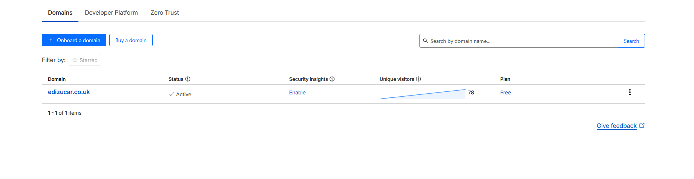
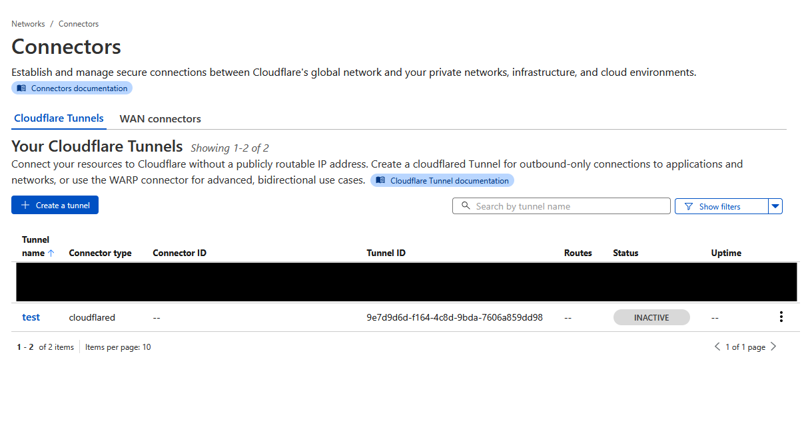
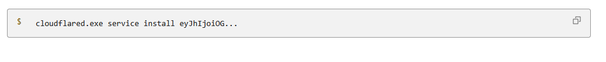

BLOG(7) User Manual BLOG(7)
NAME
hosting-behind-cgnat - How to host web services when your ISP uses CGNAT
METADATA
- Author
- Ediz Ucar
- Date
- 2025-11-26
- Tags
- homelab, selfhost
DESCRIPTION
If you found that your self hosted web services stopped working after changing ISP, you may be in the same position I was this autumn. I switched from POP Telecom (who are terrible for customer service) to Hyperoptic. The only problem was, after I went through the trouble of portforwarding my services (jellyfin, website etc), I wasn't able to access them from outside the local network. I was very confused until I discovered Hyperoptic uses CGNAT, Carrier-grade NAT.
Carrier-grade NAT
IPv4 has run out of addresses. One solution to this is NAT, network address translation.
The basic idea is that devices inside a local (home) network don't need to have a globally unique address, only the router does. The router keeps track of which traffic should go to which local device.
This is why at home you will frequently see your IPs as being 192.168.x.x. This is an address range that we've collectively agreed to only use locally.
NAT was introduced as a short term fix in 1994. Unfortunately, this doesn't solve the problem. Now, ISPs are running out of unique IPv4s to assign to the routers they distribute. So along comes CGNAT. The idea is to apply the NAT but at the router level. This means that routers' IPs are no longer globally unique. The ISP does address translation so that the right home network gets the right network traffic.
Problem: how do you host a service when you don't have a globally unique address that people can find you on? There are multiple answers to this - the long term one being: IPv6. IPv6 has it's own quirks so I didn't want to go down that route. The November 2025 Cloudflare Outage reminded me that a service called Cloudflare Tunnel exists and I decided to check it out.
Hosting behind CGNAT with Cloudflare Tunnel
Cloudflare tunnel works by routing traffic through Cloudflare. You don't need your own unique IP because Cloudflare has plenty. Users simply tunnel (good name eh?) through Cloudflare to get to your site. You run a daemon, which keeps a long lived connection to Cloudflare, on the host machine so that Cloudflare know where to send traffic.
Create a Cloudflare Account
We need to add the domain to the Cloudflare dashboard to manage it here. Once you have created your account and entered the dashboard, find 'domains' then 'onboard a domain'. You should enter the domain you own and proceed through the steps listed (pick 'free tier' if prompted - this entire process is free). For me this involved logging into my domain provider's (IONOS) dashboard, disabling DNSSEC (which took 24 hrs) and setting the name servers to Cloudflares'. Cloudflare links provider specific instructions so this shouldn't be too difficult.
Once the domain has been successfully added it should look like this in the Cloudflare account home
Create the tunnel
In the Cloudflare account home, you should be able to find the 'Zero Trust' section. The first time I went on it, it asked for some information which I provided. I chose the the free tier but it still asked for my card details. You can just go back to the account home at this point and when you enter Zero Trust again, you should see a new dashboard. Navigate to Networks, then Connectors. At this point you should see a Create a tunnel button that you should click and select Cloudflared. Then you name the tunnel and create it. You can then go back to the Connectors dashboard and see it listed.
We can see a new tunnel that is inactive
Connecting your server to the tunnel
How you will connect to the server depends on your server's OS but roughly, it will be the same. You should click configure on the tunnel and it'll provide different instructions per OS. My server is using TrueNAS, which isn't listed. The important part is the api key. Annoyingly they don't show this separately, you'll have to extract it from the command box.
We can see a new tunnel that is inactive
You should now run Cloudflared on your server and provide it with that API key - keep this key private! If everything goes to plan, the INACTIVE label on the tunnel listing in the dashboard should change to HEALTHY.
Publishing routes to applications
We now need to specify routes to the different applications to expose. To do this, go to the Connectors dashboard and configure the tunnel.
Select the 'publish application routes' tab and click 'add a published application route'. Here you need to provide the url that you want your service to be on e.g. jellyfin.edizucar.com.
You also need to specify how to access the application locally e.g. 192.168.1.10:8000. And we are done!
CONTACT
If you have any feedback for this post (positive, negative, suggstions, praise, questions are all welcome) please email me.